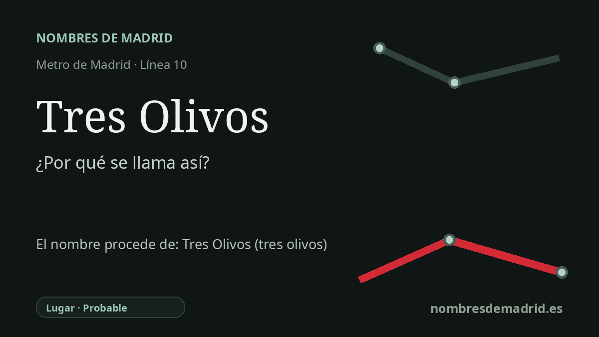

Publicado el · Investigación de Nombres de Madrid · Cómo verificamos cada origen · 7 fuentes consultadas
Respuesta rápida
La estación de Tres Olivos debe su nombre al área residencial cercana, documentada en el planeamiento madrileño como Plan Parcial 'Los Tres Olivos'. El significado literal es 'tres olivos', aunque las fuentes disponibles no prueban la historia de tres árboles concretos en el lugar.
La historia del nombre
La estación de Tres Olivos toma su nombre del área residencial de Tres Olivos que la rodea, no de una persona ni de un acontecimiento. En la documentación urbanística de Madrid el ámbito aparece como 'Los Tres Olivos', concretamente como API.08.05, un sector de plan parcial en Fuencarral. La parada de Metro heredó ese nombre local ya asentado cuando abrió en la línea 10.
Las palabras son transparentes en español: 'tres olivos' significa literalmente tres árboles de olivo. Ese sentido da al topónimo un aire rural y paisajístico, coherente con una zona del norte de Madrid urbanizada de forma relativamente tardía. Aun así, conviene separar el significado literal de la prueba histórica: las fuentes disponibles documentan el nombre urbanístico, pero no demuestran que tres olivos concretos fueran el hito físico que originó el topónimo.
La historia urbana está mejor documentada. El sector se situaba al norte del casco antiguo de Fuencarral, entre la antigua carretera de Irún, la carretera de Colmenar y la urbanización anterior de Nuevo Toboso. El Plan Parcial 'Los Tres Olivos' se redactó en 1986-1987, se tramitó como planeamiento en 1988 y fue modificado en 1993; se concibió como una extensión de Fuencarral con una estructura relativamente autónoma.
El plan dio al barrio una geometría muy reconocible. Sus autores describieron una Plaza de Los Tres Olivos central como foco social y comercial, con conexiones radiales y calles interiores en forma de anillos. Ese detalle de diseño urbano es una evidencia más sólida para explicar el nombre de la estación que las descripciones genéricas posteriores sobre zonas verdes cercanas.
Tres Olivos pasó a ser también un nombre de transporte el 26 de abril de 2007, con la apertura de la ampliación MetroNorte de la línea 10 hacia Alcobendas y San Sebastián de los Reyes. La estación quedó además como punto de ruptura operativa entre el tramo principal de la línea 10 y el ramal norte, por lo que muchos viajeros deben cambiar de tren allí. La explicación pública más prudente es, por tanto: llamada así por el área residencial y el sector urbanístico 'Los Tres Olivos'; significado literal 'tres olivos'; origen exacto en tres árboles concretos no probado.